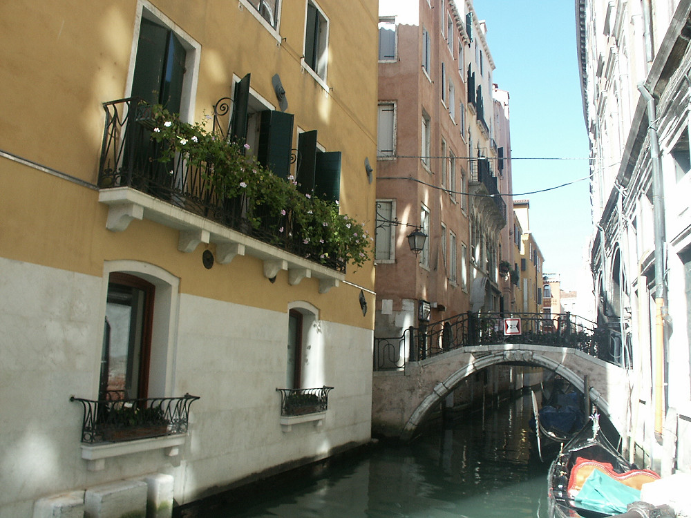

Johnnie and Oberta Baker's Photo Album Previous Gallery Next
|

Venice is a walking city. Other than at the parking lots at Rome Square and on the Lido, automobiles are banned from the city. At the risk of encountering frequent detours and dead ends, one can reach any point in Venice along the banks of the canals, on the paved streets, through the neighborhood squares, and over the 400 or so canal bridges (ponti). Many of the traditional arched marble bridges remain. Note that a 5 foot 11 inch rise in water, which has happened, would have swamped the lower floors. |